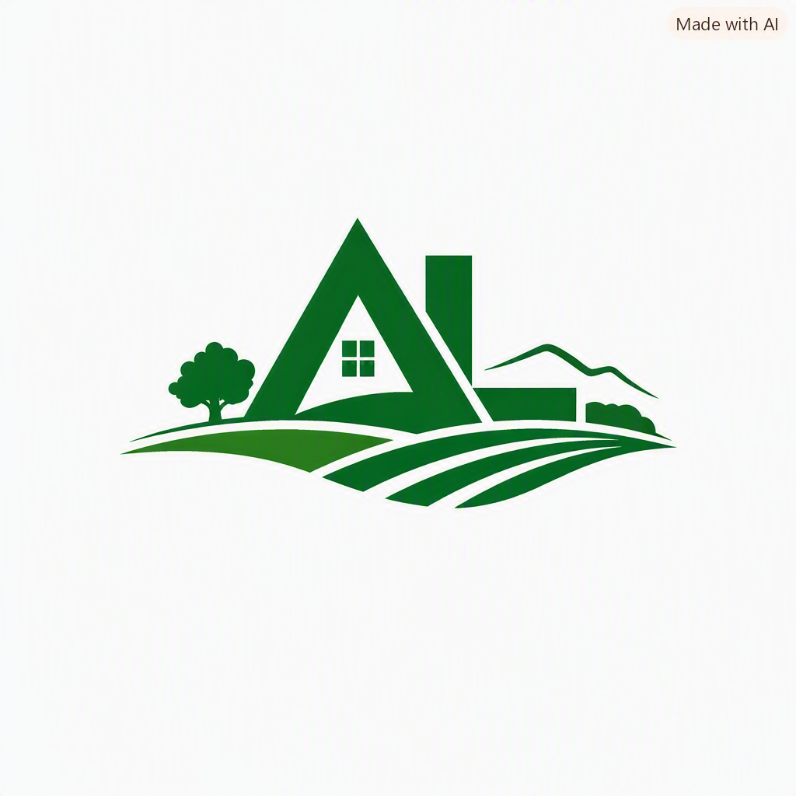

Regionale Immobilien. Langfristig gedacht. Verlässlich verwaltet.
Die Ackerl Liegenschaften GmbH ist ein steirisches Immobilienunternehmen mit Fokus auf den langfristigen Aufbau und die nachhaltige Bewirtschaftung von Wohn- und Gewerbeimmobilien. Unser Schwerpunkt liegt auf dem Ankauf, der Vermietung und der wertorientierten Entwicklung von Bestandsobjekten.